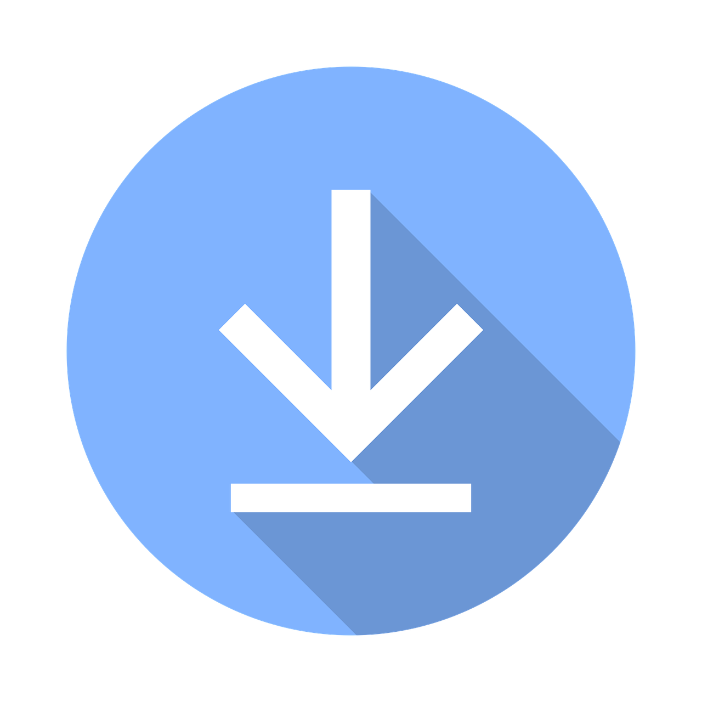

I'm currently on a 12 week coding bootcamp, training in software development. Each week I have to complete different projects based on what I have learnt, which is based on front and back end languages.
During the first phase of the bootcamp I have been learning about front end development which consists of HTML, CSS, JavaScript and Bootstrap framework. I'm learning about the DOM as well as TDD, OOP, UX and peripheral technologies.
Project - Quiz
Subject - Football
I decided to create a football quiz because it is my favourite sport. And I decided to use a timer because I wanted the quiz to be a challenge for the user.
Football QuizProject - Text Adventure Game
Genre - Fantasy
I created a fantasy style text adventure game. I decided to create my game as a fantasy style because I have played games like Oblivion, Skyrim which I enjoyed playing, so those games inspired me to create a game like that.
Text Adventure GameProject - Caesar’s Cipher
JavaScript Decoding Web App
I wanted to create something that was simple and not complicated. And because the cipher was based on Ceaser's encryption system, I thought it would be fitting to have is picture in the background.
Ceaser CipherFor the second phase of the bootcamp I will be learning React, Redux, Express and Node.js and how to run the code. As well as learning about APIs and Databases.
The third phase will consist of creating a final project using the skills I've learnt by creating projects throughout the course.
You're welcome to download my CV for your pursual.
